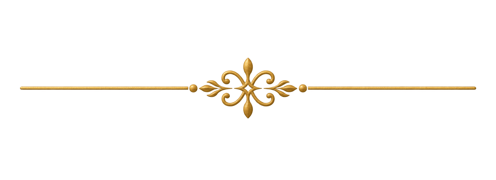
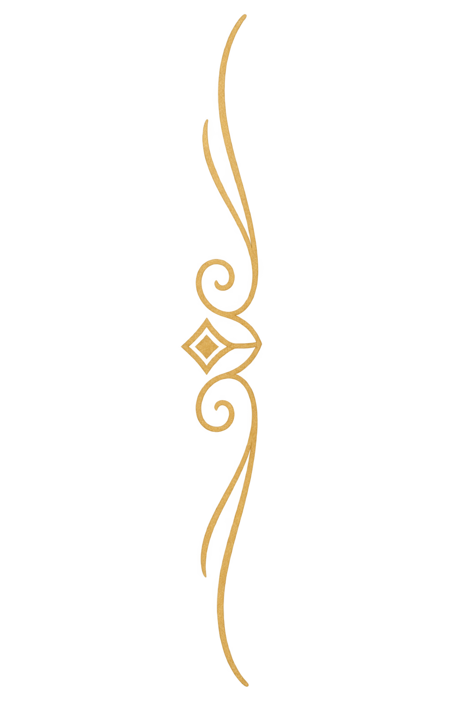
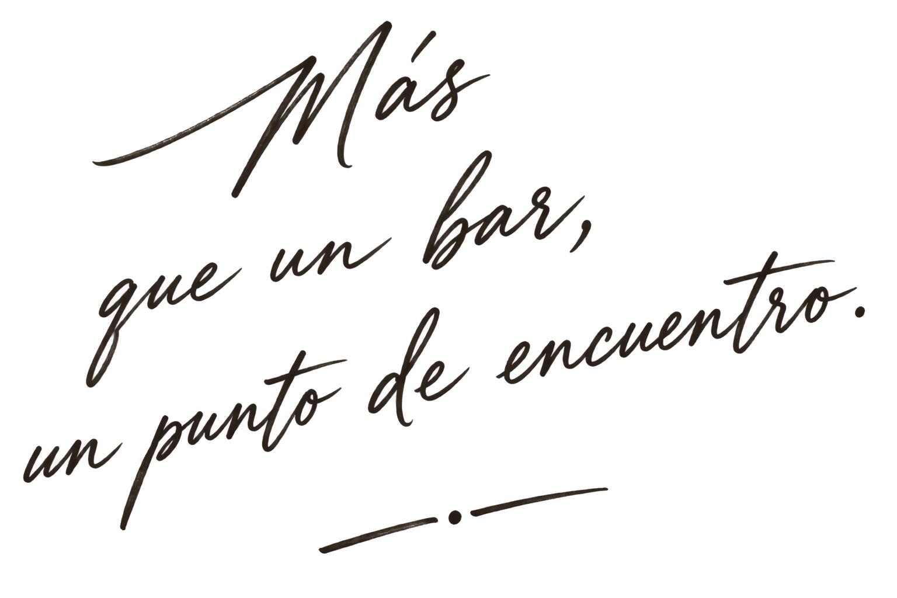
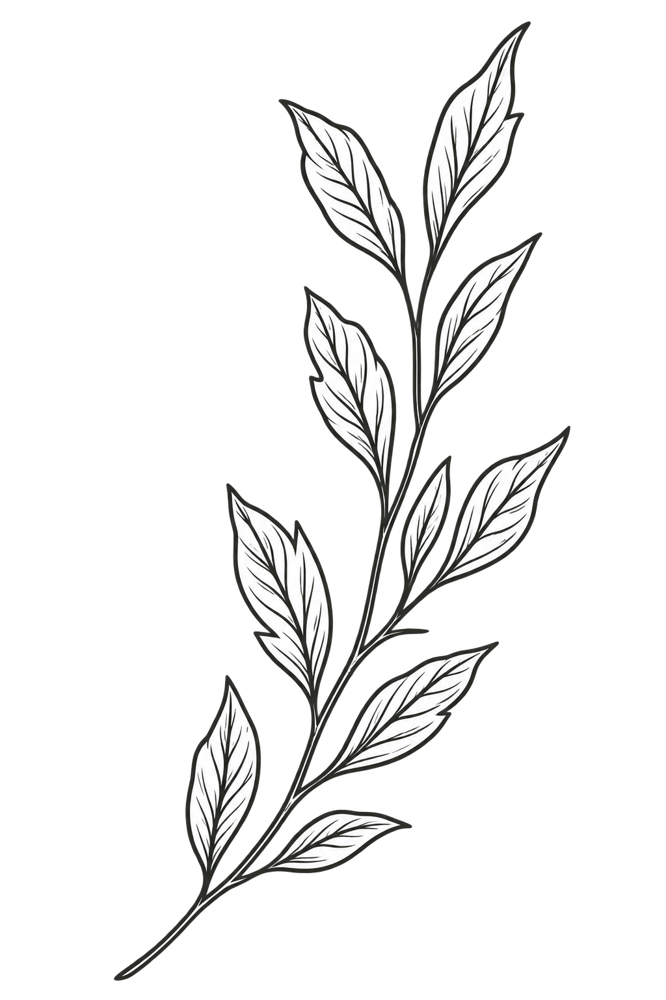

Hamburguesa Antiek
Carne seleccionada, panceta crocante, cheddar, rúcula y salsa de la casa.

Reservá tu mesa

Café de especialidad, coctelería, cervezas artesanales, comida con identidad y un ambiente único en el corazón de Pinamar.
Reservá tu mesa ›Sabores que nos representan

Carne seleccionada, panceta crocante, cheddar, rúcula y salsa de la casa.
Tragos clásicos y de autor, con ingredientes premium.
Masa de larga fermentación, productos frescos y mucho sabor.
La pausa perfecta en cualquier momento del día.
Asegurá tu lugar, la buena compañía ya la ponés vos
Reservá tu mesa online
de forma rápida y sencilla.

Disfrutá Antiek también en casa

Muy pronto sumaremos delivery online.
Seguinos en nuestras redes para enterarte
de todas las novedades.
Un lugar, mil historias
En el corazón de Pinamar
Lunes a Jueves
08:00 – 01:00
Viernes y Sábados
08:00 – 02:00
Domingos
08:00 – 01:00
Buen café, todos los días
Escribinos, te esperamos.
